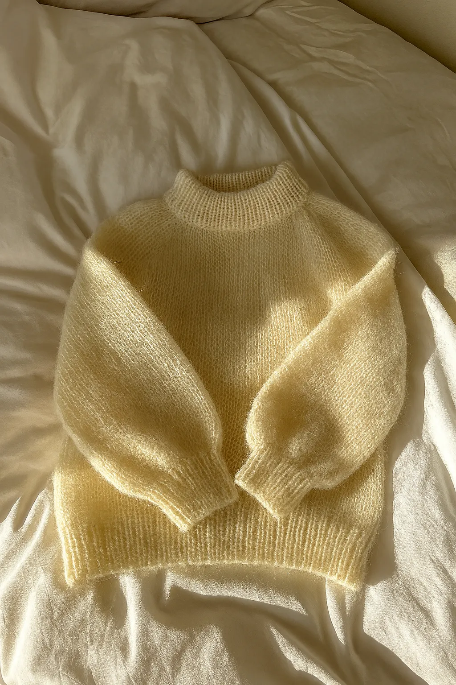
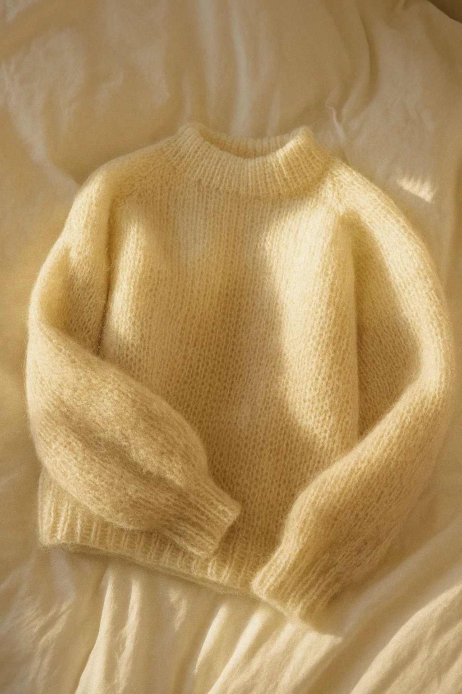
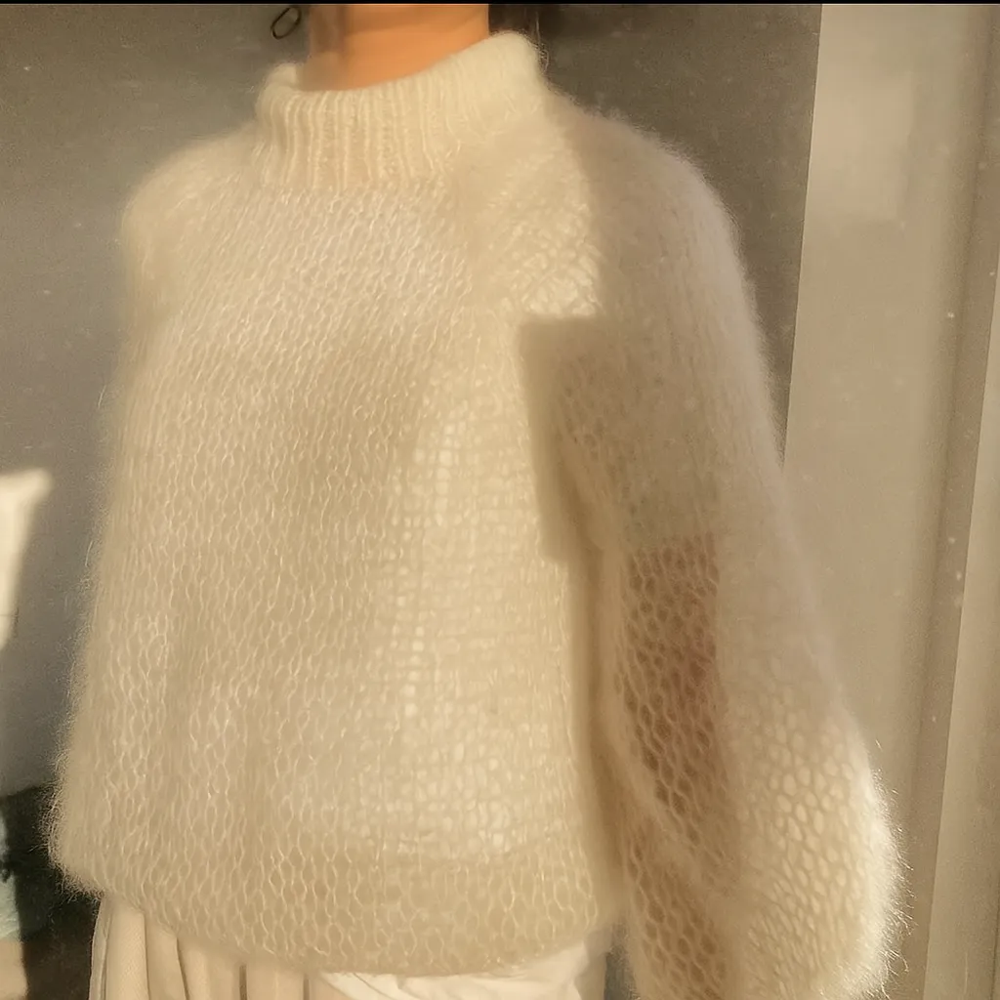
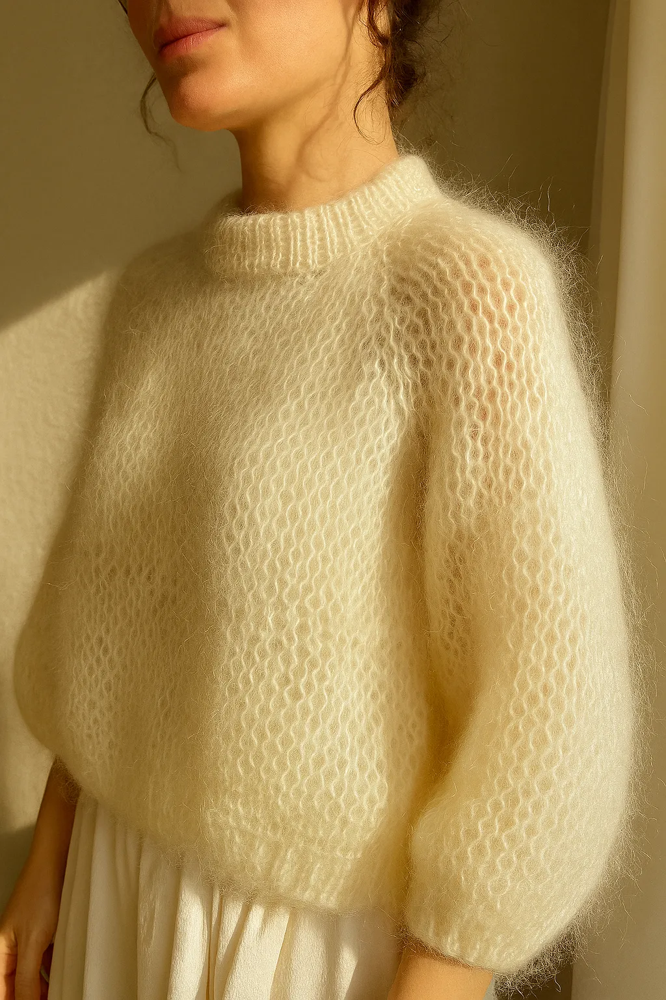
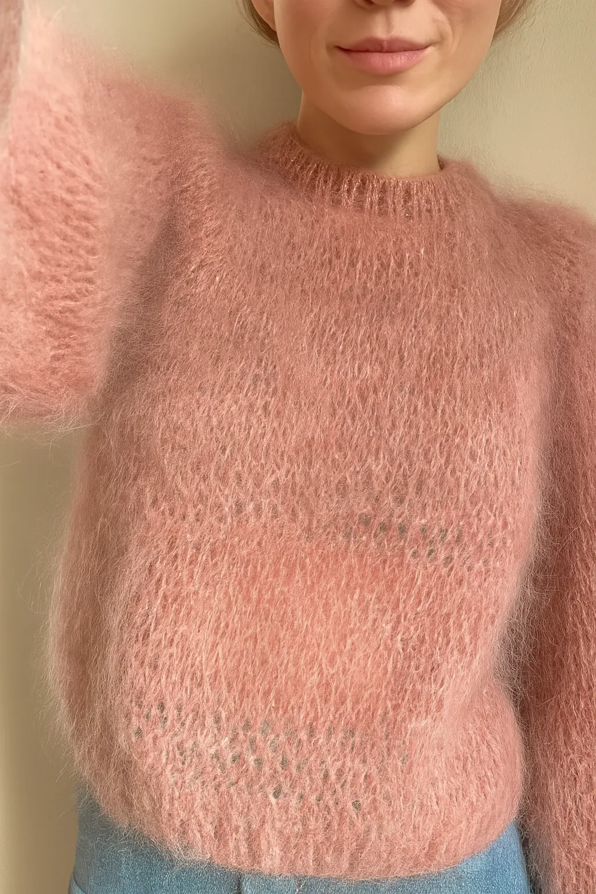
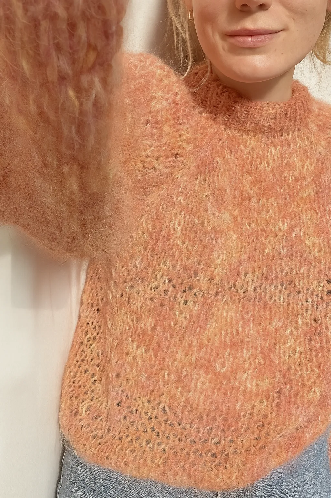
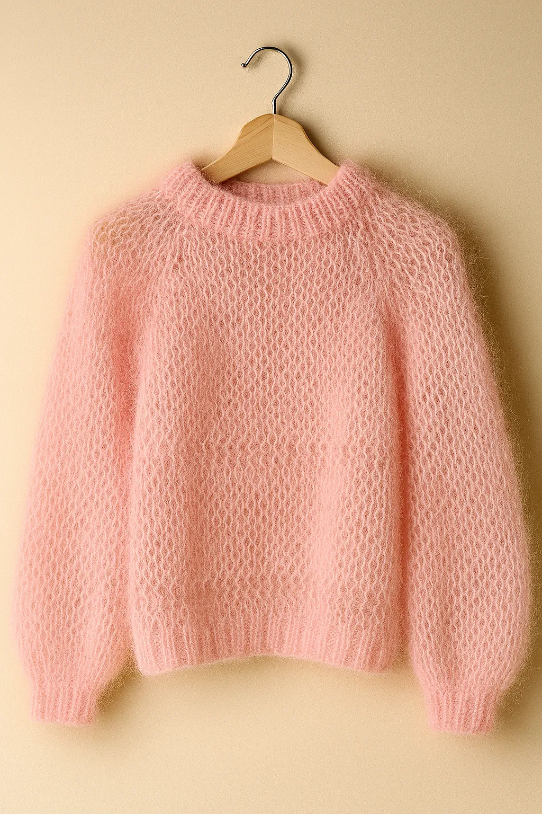

Anemone sweater med mønster
Beskrivelse:
Anemone Sweater strikkes oppefra og ned i glatstrik. Først strikkes bærestykket frem og tilbage på pinden for at danne halsudskæringen, og herefter samles arbejdet, således at resten af bærestykket strikkes rundt på rundpinden med raglanudtagninger. Ærmer og krop afsluttes af brede ribkanter i dobbeltrib og en glatstrikket kant. Halsens rullekrave strikkes til sidst ud fra opsamlede masker. Størrelsesguide Anemone Sweater bør have et bevægelsesrum (positive ease) på 20 cm i de mindste størrelser men gradvist mindre i de større størrelser. Størrelserne XXS (XS) S (M) L (XL) 2XL (3XL) 4XL (5XL) svarer til et brystmål på 75-80 (80-85) 85-90 (90-95) 95-100 (100-110) 110-120 (120-130) 130-140 (140-150) cm. Målene på den færdige sweater er angivet på forsiden af opskriften. Mål dig selv, inden du går i gang med at strikke, for at vurdere hvilken størrelse, der vil passe dig bedst. Hvis du fx måler 88 cm rundt om brystet (eller det bredeste sted på kroppen), bør du strikke en str. S. En sweater i str. S har overvidden 108 cm og vil i nævnte eksempel give et bevægelsesrum (positive ease) på 20 cm. Størrelser: XXS (XS) S (M) L (XL) 2XL (3XL) 4XL (5XL) Overvidde: 100 (104) 108 (112) 118 (126) 134 (142) 150 (160) cm Længde: 51 (54) 56 (57) 59 (61) 63 (65) 68 (70) cm målt midt bag uden rullekrave Strikkefasthed: 20 masker x 30 pinde i glatstrik på pind 4 mm = 10 x 10 cm Vejledende pinde: Rundpind 3,5 mm (40 og 80 og/eller 100 cm), rundpind 4 mm (40, 60, 80 og/eller 100 cm), strømpepinde 3,5 mm og 4 mm Materialer: 550 (600) 650 (700) 750 (750) 800 (850) 900 (950) g Peer Gynt fra Sandnes Garn (50 g = 91 m) Sværhedsgrad: ★ ★ (2 ud af 5) Se klassifikationen af sværhedsgrad her. Opskriften sendes som PDF-fil til din mail. Anemone Sweateren er strikket i Peer Gynt fra Sandnes Garn i farven Matcha [9564].
Materialer
- Garn: 400–600 g uld eller uldblanding (vælg garn med passende tykkelse til pind 4–5 mm)
-
Farver:
- Grundfarve til sweaterens krop
- Kontrastfarve(r) til anemone-blomster (fx hvid, rosa, gul)
-
Pinde:
- Rundpind i 4 mm og 5 mm (40 cm + 80 cm)
- Strømpepinde + 4 mm eller magic loop til ærmer
-
Tilbehør:
- Maskemarkører (8 stk til bærestykke)
- Maskeholdere eller garntråd til ærmer
- Stoppenål
- Saks
- Blocking-nåle/spiler til udblokning af mønsteret
Opskrift – trin for trin
Slå opSlå: 96 (104) 112 (120) masker op på rundpind 4 mm. Brug long-tail eller din foretrukne opslagsmetode. Sørg for en løs men stabil kant. Halskant (rib)Strik 6–8 cm rib (1 ret, 1 vrang). Skift til rundpind 5 mm. Bærestykke med udtagningerSæt 8 maskemarkører jævnt fordelt på omgangen.Strik glatstrik rundt, og på hver 2. omgang laves udtagninger: strik til 1 m før markør, lav 1 udtagning, strik 2 r, lav 1 udtagning igen. Gentag ved hver markør. Fortsæt indtil du har ca. 200 (220) 240 (260) masker. Mønsterforklaring (blomster/anemoner)Vi arbejder med en enkel flerfarvestrik, der danner små blomsterprikker. Mønster (gentag på alle pinde): Omg 1 (retsiden):Strik 4 ret (kant), 4 r i grundfarve, 1 r i kontrastfarve gentag til der er 4 masker tilbage, strik 4 ret. Omg 2 (vrangsiden):Strik 4 ret (kant), vrang over alle midtermasker til der er 4 masker tilbage, strik 4 ret.(Kanten strikkes ret på alle pinde for at bevare en pæn kant.) Gentag disse omgange (Omg 1–Omg 2) om og om igen, indtil bærestykket/mønstersektionen har ønsket højde (fx 10–12 cm). Opdeling til krop og ærmerSæt masker til ærmer på tråd eller maskeholder. Fortsæt kroppen rundt i glatstrik. Strik ca. 35 (38) 40 (42) cm eller ønsket længde. Afslut med rib (1 r, 1 vr) i 6 cm. Luk af løst. ÆrmerSæt ærmemaskerne tilbage på pind. Strik rundt i glatstrik. Strik 30 (32) 34 (36) cm, eller ønsket længde. Afslut med rib 6 cm. Luk af. Gentag til andet ærme. Montering & finishHæft alle ender med stoppenål.Blok (udspænd) sweateren let: fugt den, læg den fladt og træk blidt i mønsteret, så blomsterne fremhæves. Spil evt. ud med nåle for en jævn kant. Lad det tørre fladt.